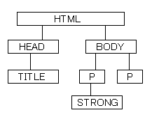

JavaScript初級者から中級者になろう
二章第一回 HTMLの木構造
いよいよ、HTMLと本格的に提携していくことになります。第一章は、これからこの第二章以降で説明する内容を理解するための土台作りでした。第一章では「オブジェクト」について説明しましたが、実はまだまだあれは氷山の一角に過ぎません。表面に軽く触れただけの話です。オブジェクトについては第九章で更に深く解説します。
しかし、あれだけ理解すれば、とりあえずここからの話を理解するのにはひとまず十分です。
console.logを使おう
ところで、本題のHTMLの話に入る前に、便利なものをひとつ紹介しておきます。今までJavaScriptで何かをした結果を確認するのにalertを使っていましたが、これはいちいち消さないとプログラムが次に進まないしたいへん不便です。そこで、このような場合に便利なのがconsole.logです。
これがconsoleというオブジェクトが持つlogメソッドであることは分かると思います。一般にJavaScriptでは、consoleという変数が用意されていて、それがもつlogメソッドを使うことで、任意の内容をコンソールに表示させることができます。
ブラウザはそれぞれコンソールというものを備えていて、それを見ればconsole.logの表示結果を確かめることができます。コンソールの表示方法はブラウザごとに異なりますが、メニューから「開発者ツール」とか「Webコンソール」とかいうような項目を見つけて開けばコンソールを見ることができます。特にコンソールが便利なのがGoogle Chrome, Firefox, Safariです。一般にコンソールが簡単に開けるように、ショートカットキーも用意されています。例えばWindowsのGoogle ChromeではShift+Ctrl+Iでコンソールが開きます。
console.logはalertに比べて格段に便利で、alertでは文字列しか表示できなかったのが（実は文字列以外を表示しようとした場合は自動的に文字列に変換されていました）、console.logではオブジェクトなどでも詳細な情報を表示してくれます。
また、コンソールでは直接JavaScriptプログラムを入力してその場で実行させることができます。小さなサンプルならいちいちHTMLに書かなくても、コンソールで実行することで簡単に実行結果を確かめることもできます。
ということで、これからは何か結果を表示する場合はalertではなくconsole.logを使用していきます。
HTMLの木構造
さて、それではHTMLの話に入りましょう。まず、JavaScriptでHTMLをいじるのですから、HTMLの構造を知る必要があります。次のHTMLを見てみましょう。
<!doctype html>
<html>
<head>
<title>test</title>
</head>
<body>
<p>testtest<strong>test</strong>test</p>
</body>
</html>このHTMLの構造を表すとこうなります。
html
｜
├――head
｜ ｜
｜ └――title
｜
└――body
｜
├――p
｜ ｜
｜ └――strong
｜
└――p
同じものを画像にもしてみました。画像のほうが分かりやすいと思いますが、毎回画像を書くわけにもいかないので基本は上の文字による表現になります。
さて、これの意味するところは、一番上にhtmlがあります。そして、その下にheadとbodyがあります。これは、「html要素の中にhead要素とbody要素がある」という意味です。つまり、こういうことです。
<html>
<head>
〜
</head>
<body>
〜
</body>
</html>
上のサンプルを一部省略したものです。この部分だけ抜き出すと、意味が分かりやすいと思います。
また、headの下にtitleがあります。これも、head要素の中にtitle要素があることを意味しています。上のサンプルでは
<head>
<title>test</title>
</head>
の部分ですね。
body側の下にもいろいろついていますが、全部意味は同じです。
さて、このように、HTMLの各要素はこのように、包括関係によって上下につながっています。このような構造は木構造と呼ばれます。一番上から木が枝分かれするように伸びていくのが分かります。
そのため、例えば
<b>ああああ<i>ああ</b>あ</i>のような構造はありえません。ある要素の中にある要素（この場合bの中のi）は、かならずその要素の中で（この場合bの中で）閉じられなければなりません。外側の要素の外にはみ出ることはあってはならないのです。
親と子
この木構造に関する用語がいくつかあります。
まず、この図で、ある要素の上にある要素を、その要素の親といいます。例えば、headとbodyから見たら、親はhtmlです。titleなら、親はheadです。strongなら、親はpです。htmlは一番上なので、親はありません。
逆に、ある要素の下にある要素を子といいます。htmlの子はheadやbodyだし、headの子はtitleだけです。bodyの子はp2つとなります。
親が2つ以上あることが無いのに対し、子は2つ以上ある可能性があります。一番下の要素（title,strongなど）には子要素はありません。
この親と子のつながりが、HTMLの構造において要素どうしの重要なつながりです。
また、親と子を拡張して、「祖先」「子孫」といった言葉も使われます。例えば子孫は子、子の子、さらにその子、…の全てを表すものです。